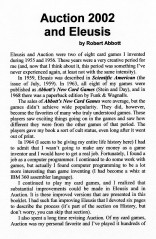

| This is a new 32-page booklet that replaces my previous New Eleusis booklet. It contains two games of mine that are very different from each other. Eleusis is a pretty intense intellectual experience. Auction—on the other hand—is fun. Auction first appeared in my 1963 book Abbott’s New Card Games and since then it’s been the game I most enjoyed playing. Almost every time I played it, I would make a rule change. Sometimes I’d change a rule in the middle of a hand, and, as you can imagine, this caused some objections from the other players. During the last ten years there have been no further rule changes, so I assumed the game had reached a stable state. I decided to write up this new revised version of the game, and I gave it the name “Auction 2002.” Here is a section of this site devoted to Auction. |  | |||
|
The booklet also has an improved write-up of Eleusis. There are no rule changes, but I added suggestions to help a group that is playing the game for the first time. Here is a section of this site devoted to Eleusis. For information about buying a copy of Auction 2002 and Eleusis, see my mail order page. Back to the games home page | ||||